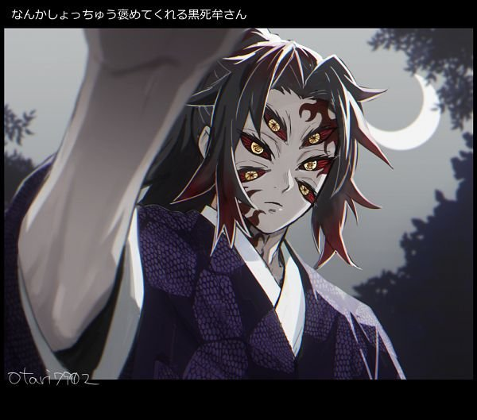
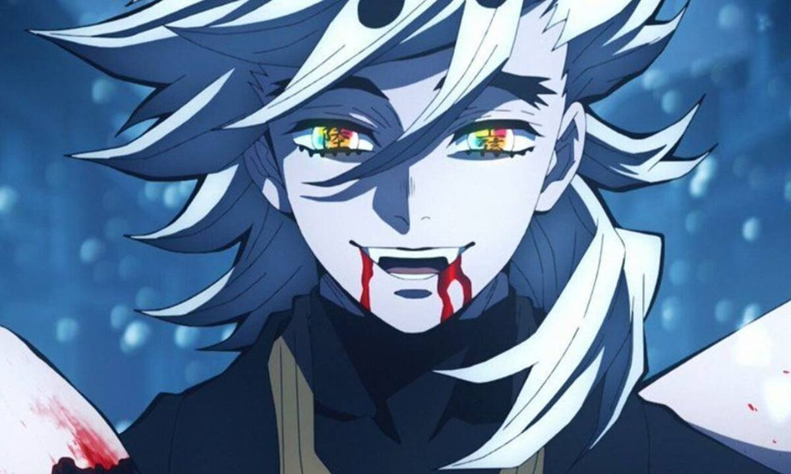
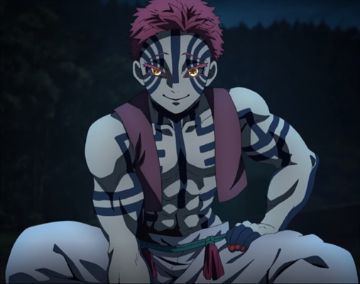
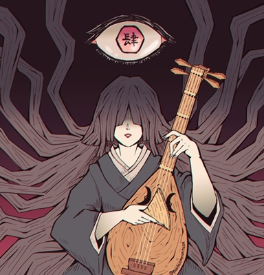
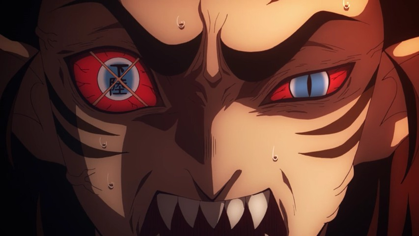

ONIS

Muzan Kibutsuji
Muzan Kibutsuji tem aproximadamente 1000 anos de idade e foi o primeiro demônio na história de Kimetsu no Yaiba, tendo adquirido essa “maldição” após tomar um remédio que salvaria a sua vida. Ele, apesar de ser um oni, consegue regenerar a cabeça, que é cortada do seu corpo. Porém, ainda possui a fraqueza contra os raios solares, que são externamente mortais caso eles o atinja, pois seu corpo seria desintegrado imediatamente.Por ser o primeiro demônio e possuindo mais força que qualquer outro que ele já tenha transformado, ele é o único líder controlando todos eles através de seu sangue que tem poder sobre eles e também dando mais força para esses onis no qual ele escolher dar um pouco de seu sangue. Como seu sangue é muito potente, ele é capaz de matar qualquer oni que absorve-lo, entretanto, caso esse oni escolhido sobreviver com quantidade de sangue que Muzan decidir dar a ele, Muzan então o reconhece e da a possibilidade de batalhar contra outro demônio, tentando ocupar seu espaço entre Lua Inferior ou Lua Superior.
Muzan busca imunidade contra o Sol, tanto que manda seus Luas Superiores procurarem por uma flor que possa ser a chave para a sua ambição, a dita Lírio da Aranha Azul. Carregando um semblante de pura frieza e sendo um personagem capaz de fazer qualquer coisa para obter o que quer, Muzan ainda tem uma família humana.
LUAS SUPERIORES
Os luas superiores são os onis mais fortes transformados pelo Muzan e os mais reconhecidos por ele. Com suas forças, são capazes de eliminar os Hashiras e vem fazendo isso em todo o tempo que permanecem vivos.Por possuirem tal força e reconhecimento pelo líder, eles são encarregados das missões mais importantes e os únicos que tratam diretamente assunto para o Kibutsuji.

Kokushibou
Ele é um demônio afiliado ao Doze Kizuki, mantendo a posição mais alta, Classificação superior um.Quase cinco séculos atrás, durante o Era Sengoku, Kokushibo já foi humano com o nome de Michikatsu Tsugikuni, um ex Assassino Demônio e o irmão gêmeo mais velho de Yoriichi Tsugikuni, o assassino demoníaco mais forte que já existiu..
É revelado que, como humano, Kokushibo abrigava um imenso sentimento de inveja em relação ao irmão gêmeo mais novo, por seu talento natural e habilidades incríveis. Esses sentimentos de ciúme e desprezo só se tornaram mais fortes ao ver seu irmão se tornar um guerreiro inigualável de calibre inigualável entre o Corpo de Caçadores de Demônios, com nenhum dos Hashira chegando perto de seu nível de força, e essa inveja atinge o pico quando descobre que Yoriichi ainda estava vivo e na velhice, apesar da maldição do Marcas de Slayer Demon supostamente matando-o antes de completar 25 anos.
Kokushibo desmoronando ao ver o amor de seu irmão por ele.
No entanto, apesar desse imenso ciúme, despeito e ódio total que ele abriga por Yoriichi, ele ainda se importa profundamente e ama seu irmão, como visto quando foi tocado por Yoriichi valorizando a flauta artesanal que ele havia feito para ele quando criança; Kokushibo derrama lágrimas genuínas pela morte de seu irmão, e chega a manter a flauta nos séculos seguintes como uma lembrança de seu amado e odiado irmão mais novo.
Como o membro mais alto do ranking Doze Kizuki, Kokushibo é um demônio extraordinariamente poderoso, perdendo apenas para o Rei Demônio, Muzan Kibutsuji ele mesmo. Ele lutou contra inúmeros Demon Slayers e acumulou vasta experiência e conhecimento ao longo de seus quase 500 anos de vida. Seu físico é um dos mais polidos e imensos existentes, pois ele não é apenas um usuário de Respiração total por concentração, mas também um marcado indivíduo que fez uso do Mundo Transparente, bem como o demônio que possui a maior concentração de sangue de Muzan na organização
Kokushibo era um espadachim extremamente poderoso, considerado o mais forte das Doze Demônios da Lua e o segundo demônio mais forte da série, logo atrás de Muzan Kibutsuji . Como um dos demônios mais antigos da série, ele lutou contra vários Demon Slayers e obteve vasta experiência e conhecimento em combate. Ele foi capaz de decifrar facilmente as técnicas e habilidades de pelo menos dois Hashira e dominá-los na batalha. Como usuário de Breath , ele possuía níveis tremendos de força e reflexos que foram aprimorados ainda mais por sua fisiologia demoníaca. E por ser antigo Exterminador, consegue utilizar a respiração da lua o que o torna ainda mais poderoso.
Douma
Desde seu nascimento, Douma foi visto como um presente divino pelos seus pais, o motivo? Douma nasceu com os olhos com cores do arco-íris e foi visto como uma criatura sobrenatural, pois acreditavam que ele poderia ouvir a voz de Deus e ele foi preparado para ser o líder religioso do Culto do Paraíso Eterno.Douma é um completo psicopata, incapaz de compreender as emoções básicas dos humanos. Ele admite que durante seus dias humanos, o conceito de emoções era algo praticamente alienígena para ele. Ele tem uma visão cínica do mundo e tem sua própria visão de um mundo ideal: ele acredita que o mal é a verdadeira salvação.
Ele é o oni que mais parece com Muzan Kibutsuji, sendo cruel, manipulador e falso. Aos 20 anos, ele conheceu Muzan, que o transformou em um demônio.
Douma também tem grandes habilidades ofensivas e defensivas usando seus leques Gunsen, contando com ataques destrutivos e usando-os para bloquear os ataques dos oponentes. Os leques também servem para Douma espalhar sua névoa congelante, que é usada para atacar e defender, além de destruir os pulmões dos adversários e deixando-os incapazes de batalhar.
Sua Arte Demoníaca de Sangue cria e produz gelo e geada, usando sua própria carne e sangue. Ele também pode criar lanças de gelo para empalar seus adversários à longa distância e também gerar clones de si mesmo com a mesma força que ele, além de usar a sua arte demoníaca.


Akaza
Akaza é um Demônio forte, teimoso e impulsivo que gostava de lutar, especialmente contra Caçadores de Demônios fortes em Kimetsu no Yaiba – Demon Slayer. Ele desprezava qualquer um que considerasse fraco, mas genuinamente respeitava aqueles que eram fortes aos seus olhos, independentemente de sua raça. Uma vez que conheceu alguém que considera forte, ele exige saber seu nome e não iria parar até que descobrisse, ele se lembra de todos os nomes que guardou na memória como um tributo à força deles.Como o detentor do título de ‘Lua Superior 3’, Akaza possuía uma quantidade enorme de poder, tendo sido capaz de derrotar Kyojuro Rengoku, o Hashira das chamas, e também vários Hashira anteriores, de acordo com o que ele afirmou. Ele é capaz de se regenerar de feridas de corte e até mesmo membros perdidos com pouco esforço. Ele é capaz de sobreviver mesmo depois de ter sua cabeça cortada, e então é capaz de regenerar uma nova, um feito que apenas Muzan havia realizado anteriormente.
A habilidade de demônio especial de Akaza concede a ele a habilidade de gerar ondas de choque com a simples pressão criada por sua força sobre-humana de seus punhos e pernas ao golpear. As ondas de choque parecem ter o mesmo tom de azul de suas tatuagens e podem ser desencadeadas tanto de perto quanto de longe. O poder das ondas de choque vai desde derrubar oponentes em uma distância grande, até criar crateras no solo. Essa habilidade combinada com sua força sobre-humana o torna um oponente formidável tanto no combate corpo-a-corpo quanto no combate à distância.
Hantengu
A forma primária de Hantengu tinha uma personalidade de covardia. Ele se assustava facilmente com o que acontecia ao seu redor, mostrando traços de paranóia, medo e ilusão, pois, apesar das evidências óbvias de seus inúmeros crimes como humano, ele ainda acreditava que era inocente e não fez nada de errado. Mesmo como um Demônio , matando e comendo dezenas de pessoas inocentes, ele ainda teimosamente e delirantemente acreditava que era inocente. Quanto mais ameaçado ele se sentia, mais fortes suas outras personalidades se tornavam.Tendo ocupado a posição de Nível Superior 4, Hantengu pode ser considerado o quinto Demônio mais forte da série. Uma vez que quatro de seus clones se combinaram para formar o Zohakuten, ele foi capaz de dominar os já mencionados 3 Demon Slayers.
Manifestação de emoção: A principal habilidade de Hantengu é manifestar suas emoções como poderosos clones mais jovens de si mesmo com suas próprias aparências, personalidades e habilidades únicas. Esses clones também parecem incorporar uma certa emoção que Hantengu já sentiu antes, e demonstrou sentir apenas essa emoção específica. Cada um é identificado por suas roupas e uma tatuagem kanji em sua língua rotulando sua emoção central. Hantengu desenvolveu essa habilidade sendo constantemente encurralado, com suas emoções intensas se intensificando e se tornando manifestações físicas através de seu sangue demoníaco.


Nakime
Ela se tornou a nova Classe Superior Quatro dos Doze Kizuki após o desaparecimento de Hantengu e serve sob o comando de Muzan Kibutsuji.Ela convoca as Luas Inferiores para a Fortaleza do Infinito. Não muito tempo depois de serem convocados, as Luas Inferiores restantes são purgadas por Muzan depois que ele as considera fracas e inúteis. Ela fica em silêncio enquanto Muzan mata todos eles. Mais tarde, ela também convoca as Luas Superiores para uma reunião. Eles perguntam a ela onde Kokushibou está escondido e ela rapidamente responde que ele estava lá. Ela permanece em silêncio pelo resto da reunião e manda todos de volta assim que termina, apesar de Douma ainda querer perguntar algo a ela.
Nakime tem a capacidade de distorcer seus arredores a todos os seus caprichos usando o Castelo do Infinito, como gerar portais para transportar pessoas, garantindo sua imensa mobilidade. No entanto, ela tem um desempenho ruim em combate real e, portanto, ela deve confiar nessas habilidades de manipulação de portal e ambiente ao atacar ou defender, como esmagar seus inimigos entre as estruturas do Castelo do Infinito.
Gyokko
Assim como os outros demônios, Gyokko demonstrou uma personalidade maligna e sádica, tendo prazer em ver o sofrimento alheio e não vendo o valor da vida dos outros. Uma característica sua é seu narcisismo extremo, vendo a sí mesmo como um símbolo de beleza absoluta e tendo uma grande quantidade de arrogância em suas habilidades.A forma verdadeira de Gyokko, usada quando ele utiliza toda sua força. Nessa forma suas características físicas são significamente aprimoradas e ele ganha a capacidade de transformar tudo oque ele toca em peixes,
Fisiologia Demoníaca: Como um demônio, Gyokko pode tirar proveito de sua anatomia e habilidades demoníacas. Além de possuir uma força física e resistência sobre-humana, demônios não se cansam de lutar, não adoecem, não sentem dor e ficam constantemente mais fortes depedendo do número de humanos que eles mataram e absorveram. Gyokko como um dos doze Demônios da Lua, recebeu sangue do próprio Muzan oque fortaleceu drasticamente suas habilidades, sendo muito superiores as Luas Inferiores e demônios comuns.


Daki e Gyuutarou
Gyutaro é um demônio, sendo membro dos Doze Demônios da Lua, ele ocupa a posição de Lua Superior Seis, apesar de ser o verdadeiro dono da posição ele também a dividi com sua irmã mais nova, Daki.Similar a outros demônios ele demonstrou uma personalidade sádica e maligna, sentido prazer do sofrimento dos outros e não dando valor a vidas humanas. Uma característica notante sua e ele ter um alto sentimento de inveja com os outros, também sendo arrogante sobre suas próprias habilidades. Ele compartilha um forte amor por sua irmã e apesar de não ter se arrependido de suas escolhas e as pesssoas que ele matou, seu único arrependimento foi ter influenciado-la a seguir o mesmo caminho maligno que o seu.
A arte demoníaca de Gyutaro se baseia em um par de foices negras que ele é capaz de criar de sua própria carne. As foices possuem um veneno muito tóxico nelas, que mesmo alguém com resistência como Uzui fica notoriamente mais lento ao ser atingido. Pelas foices serem de sua própria carne, Gyutaro pode manipular suas formad até certo ponto, como ele fez ao prender as lâminas de Tanjiro e Uzui com sua carne que se originou de suas foices.
Daki Diferente de seus companheiros, ela se mantém completamente à vista dos humanos. Trabalhando como uma acompanhante em uma das casas do distrito do entretenimento, Daki controla todo o lugar através do medo, prendendo as garotas que não gosta em seus tecidos e consumindo os humanos mais bonitos.
A arte e forma principal de combate usada por Daki. Ela se baseia no uso de tentáculos em formato de faixas, que ela pode livremente controlar para atacar e se defender do seu oponente, elas conseguem cortar como uma lâmina mas ainda tendo a flexibilidade de um tecido.
Kaigaku
Kaigaku, mantendo suas convicções de que força e sobrevivência eram o que importava, provou-se extremamente egoísta e orgulhoso, se pensarmos que ele abandonou tudo pelo que lutou a vida inteira para conseguir quando implorou para tornar-se um demônio, traindo seu mestre e seus companheiros caçadores, chegando até a matar outros humanos para se fortalecer. Kaigaku tinha uma noção de moral estranha, pois ele só simpatizava com alguém se a pessoa concordasse com ele, quando ainda era discípulo de Jigoro, sentia inveja de Zenitsu, pois ele sabia usar a respiração número um, que era justamente a única respiração que Kaigaku não sabia. Mesmo sabendo todas as outras cinco ele não foi escolhido como sucessor único de Jigoro, o que serviu apenas para desencadear sua arrogância e egoísmo, arruinando seu sonho de ser um pilar.Como já disse anteriormente, Kaigaku dominou cinco das seis Respirações do Trovão, e, com sua força demoníaca, tais técnicas foram ainda mais aprimoradas, podendo até lançar raios de cor preta.
Complementando seu estilo de respiração: Respiração do Trovão, A Arte Demoníaca de Sangue de Kaigaku concede a ele habilidades eletrocinéticas especiais que lhe permitem gerar e manipular raios e eletricidade de cor preta de sua carne e sangue. Essa arte de demônio de sangue, semelhante a um raio, cria um efeito especial que racha e rasga a carne de seu alvo enquanto a queima, aumentando muito a letalidade e a capacidade ofensiva de seus ataques.O sangramento causado pelo efeito da espada de Kaigaku quase destruiu os olhos de Zenitsu e o deixou gravemente ferido após a luta.
Kaigaku usa essa arte de demonstração de sangue com grande efeito, utilizando raios em conjunto com suas técnicas de respiração do trovão para melhorar seu alcance e velocidade de ataque, que até o Zenitsu teve problemas para acompanhar. Está implícito que essa arte de demonstração de sangue ajudou a compensar a incapacidade de Kaigaku de executar a técnica mais fundamental do estilo de respiração do trovão, Thunderclap e Flash, possivelmente fazendo dele o usuário mais poderoso do Thunder Breathing, pois ele já havia dominado as outras 5 formas padrão no Breathing Style.

LUAS INFERIORES
Os luas inferiores são onis mais fortes dentre a maioria, porém, estão em um nível bem abaixo dos luas superiores, porém, por conseguirem se destacar e atacar muitas pessoas, conseguem tambem serem reconhecidos pelo Muzan. Entretanto, são onis que por não terem muita importância pelo líder e nem força, podem ser descartados facilmente por ele.
Enmu
Enmu era muito sádico em personalidade e era conhecido por desfrutar da dor e do sofrimento dos seres humanos; seu método favorito de tormento era dar-lhes um sonho feliz e agradável antes de transformá-lo em um pesadelo. Ele teve prazer no sofrimento dos outros, desfrutando das expressões agonizadas que eles fizeram quando os torturou. Esse sadismo se estende até a seus companheiros demônios, enquanto ele gostava de ver seus companheiros Lower Ranks sendo mortos bem na frente de seus olhos.Além do sadismo, Enmu demonstrou exibir comportamentos masoquistas, várias vezes ele expressou reações positivas à dor infligida a ele. Esse gozo, no entanto, parece ser limitado àqueles a quem ele apenas respeita e se mantém fiel, o poder necessário sobre ele sendo principalmente hierárquico e não literal. Esse masoquismo foi mostrado com destaque no Castelo Infinito reunião, durante a qual, ao ser dotado de Muzan's sangue, uma experiência tipicamente torturante e dolorosa que poderia ter potencialmente matado ele, Enmu apareceu com uma expressão sorridente e corada, aproveitando a experiência. No entanto, essas tendências masoquistas não eram predominantes em sua batalha contra os Demon Slayerscomo quando o atacaram com sucesso, ele foi visto apenas divertido, chocado ou frustrado por seus fracassos.
A Arte Demoníaca de Sangue de Enmu concedeu a ele a capacidade de forçar qualquer pessoa a dormir profundamente. Ele pode fazer isso por diferentes meios, alguns mais sutis que outros, mas todos efetivamente deixando seus inimigos vulneráveis e incapazes de lutar. O sono induzido foi muito potente e levou um esforço considerável para acordar.
Hairo
Hairo parece ter imensos problemas de controle da raiva, chegando ao ponto de ser "suicida": atirando na cabeça para contê-lo. Presume-se que a principal causa seja devido a maus-tratos de sua vida humana ao ser membro dos Shinsengumi. Apesar de sua raiva quase constante, ele mostrou humildade, vista quando venerava Kyojuro Rengoku'espadachim antes de sua morte.Não se sabe muito sobre Hairo, mas sabe-se que em algum momento de sua vida ele dominava a arte de Bushidō mas foi assediado por um grupo de atiradores que insultou sua espadachim. Em algum momento em que ele se tornou um demônio, ele quase foi morto por Shinjuro Rengoku, mas foi poupado ou escapou e ganhou força, tornando-se o segundo escalão inferior.
A Arte Demoníaca de Sangue de Hairo permite criar e manipular sombras com propriedades e características especiais de sua carne e sangue. Suas sombras têm formas e desenhos únicos, variando de padrões triangulares brancos a olhos. Essas sombras contêm um efeito de sucção, não apenas absorve os danos dos ataques físicos, mas também torna extremamente difícil escapar quando em contato com eles. Além disso, as sombras também têm uma propriedade especial que aparentemente dá um bolso dimensional para armazenar inúmeros itens e ele pode conjurar esses itens de qualquer lugar que suas sombras ocupem. Hairo geralmente opta por moldar suas sombras em criaturas semelhantes a lobos para aumentar sua potência de ataque e alcance impressionante. Caso contrário, ele transformaria partes de seu corpo em sua arte de demônio do sangue para anular ataques e prender seus inimigos.
Rokuro
Assim como os outros Lower Ranks, Rokuro respeitava e temia Muzan Kibutsuji como seu líder. Depois que quase todos os Lower Ranks foram mortos por Muzan, Rokuro estava visivelmente assustado com o fato de o mesmo acontecer com ele e recorreu a implorar ao líder por mais sangue para aumentar sua força, para que ele não morresse, mostrando um comportamento um tanto covarde. Apesar disso, Rokuro parecia estar muito confiante no potencial de suas habilidades como um Demônio, já que ele alegou que se recebesse um pouco mais do sangue de Muzan, ele definitivamente poderia se tornar um lutador forte, digno de estar nas fileiras dos Doze Kizuki, o que mostrou que ele tinha uma grande determinação e paixão por seu papel.Como o segundo escalão inferior, Rokuro foi o segundo demônio mais forte entre os escalões inferiores, embora sua verdadeira força seja desconhecida. Ele teria evidentemente um demônio forte, pois o único demônio classificado acima dele era o Enmu muito poderoso, e ele afirma que pode aclimatar uma porção do sangue de Muzan sem falhas, que demonstrou induzir dor torturante, mesmo em baixas quantidades. A afirmação de Muzan de que o extremamente formidável Rui pode igualar o segundo e o segundo escalões em força pode ser uma dica potencial para o poder de Rokuro.
Wakuraba
Como a maioria dos Luas Inferiores, Wakuraba era muito leal a Muzan Kibutsuji. Quando Muzan executou brutalmente dois de seus colegas Lower Ranks, ele estava em dúvida de que esse seria o seu fim, pois esperava se tornar mais forte para ele. No entanto, Wakuraba parecia acreditar na autopreservação acima de tudo e não era apenas cegamente obediente a Muzan. Ao perceber que seu mestre não tinha a intenção de poupar uma única alma, ele recorreu a fugir de Muzan em uma tentativa final de sobreviver.Como o Três Inferior dos Doze Kizuki, Wakuraba foi sem dúvida um demônio muito poderoso. Ele alegou que conseguiu subir na classificação, indicando que ele inicialmente era o Lower Six e era forte o suficiente para subir. No entanto, sua verdadeira força permanece desconhecida devido ao ato do rei demônio de matá-lo, e era evidente que ele empalideceu em comparação com pessoas como Rui e Enmu. Ele pelo menos mostrou confiança suficiente em si mesmo quando planejou tentar escapar de seu mestre em um local desconhecido.


Mukago
De todos os Luas Inferiores, Mukago mostrou-se o mais covarde. Conforme declarado por Muzan Kibutsuji lendo seus pensamentos, Mukago não tinha intenção de lutar contra o Corpo de Caçadores de Demônios' Hashira e planejava fugir com a mera menção de um, que se notou ter feito isso várias vezes. Quando Muzan soube disso, Mukago tentou apaziguá-lo e implorar por misericórdia.Pouco se sabia sobre a força e as habilidades de Mukago como Demônio, mas pode-se supor que ela deve ter sido muito mais forte que um Demônio médio e superior em poder a Kamanue, como ela recebeu uma posição mais alta do Lower Rank do que ele.
Rui
Em geral, Rui era um indivíduo quase calmo e educado, raramente levantando a voz e conversando com todos, demônios ou Demônios Assassinos, com um tom e vocabulário razoáveis, embora sua maneira baixa e gutural de falar pareça implicar raiva e aborrecimento reprimidos. Toda vez que ele falava Tanjiro Kamado durante o duelo, ele permaneceu um pouco civilizado no discurso, nunca o insultando ou chamando-o de nome.Rui era na verdade um indivíduo perturbado que desejava os laços estreitos que uma família tinha e esperava que os membros da família desempenhassem seus próprios papéis. Apesar de ter ansiava por uma "família", sua visão de um deles era incrivelmente distorcida e fundamentada em nada além de medo dele, instilada por repetidos abusos em seus companheiros parentes, o que ele fez com sadismo impenitente. Para ele, "membros da família" que não desempenham seus papéis como esperava que ( protegessem Rui incondicionalmente ou seguissem suas instruções ) eram inúteis e tão bons quanto mortos.
Como um dos Doze Kizuki, Rui foi um dos demônios mais fortes que existem. Essa força superou facilmente a de outros demônios, já que ele foi facilmente capaz de conquistar e conter numerosos demônios de Monte Natagumo e forçá-los a trabalhar para ele e se tornarem membros de família dele. Evidências de sua força foram mostradas ainda mais quando ele conseguiu facilmente sobrecarregar um lutador talentoso como Tanjiro Kamado, Além disso, demônios habilitados pelo sangue eram fortes o suficiente para matar dezenas de Assassinos Demônios facilmente. Por fim, o poder de Rui ainda empalideceu em comparação com o Hashira, tendo sua técnica facilmente superada e depois decapitada sem esforço por Giyu Tomioka.
No segundo banco de dados, foi revelado que, embora Rui fosse apenas um demônio por 20 anos, ele foi declarado altamente capaz e apreciado por Muzan ele mesmo. Também foi declarado que Rui era tão habilidoso quanto o Lower Rank One ou Two, mas não era obcecado por números e não sentia a necessidade de entrar em uma Batalha de Sangue com eles para substitua-os. Muzan chegou ao ponto de esperar que Rui fosse capaz de derrotar Hashira sozinho, apesar de ser um Lower Rank. Também foi declarado que se Rui recuperasse todo o poder que compartilhava com sua "família", ele poderia ter sido uma boa combinação para o Hashira, e possivelmente poderia ter sido mais forte que eles.


Kyogai
Kyogai, também conhecido como o Demônio do tambor, é um antagonista de apoio em Assassino Demoníaco. Ele tem a capacidade de mudar a gravidade nas proximidades, tocando bateria ao redor do corpo, com uma de suas baterias, permitindo que ele desencadeie um ataque de garra que possa causar sérios danos à área alvo. Kyogai foi o ex-lua superior seis dos Doze Kizuki antes de seu exílio, cortesia de Muzan Kibutsuji (o que resulta na marca de x em um dos seus olhos) devido à fraqueza do primeiro. Isso levou Kyogai a passar por uma missão para recuperar seu título ( Que outro demônio chamado Kamanue reivindicaria ). Ele serve como o principal antagonista do Drum House Arc.Apesar de sua natureza como um demônio sanguinário, Kyogai é realmente muito colecionado e de fala mansa. Kyogai tem o hábito de murmurar coisas que o irritam. Kyogai também se mostra intolerante à grosseria e mata quem invadir sua casa. Mesmo assim, se estiver irritado o suficiente, Kyogai levantará sua voz sobre o incômodo e insultará seus oponentes. Mas, no fundo, Kyogai é um homem inseguro que deseja ser reconhecido pelo mundo por seus escritos e ficou arrasado quando lhe disseram para desistir dele como humano. Mesmo como um demônio, sua insegurança persiste depois que ele foi despojado de seu título como um dos Fileiras inferiores. Kyogai ficou desesperado para se redimir, consumindo humanos com sangue raro para recuperar seu título. No entanto, depois Tanjiroreconhece o talento de Kyogai, sua alma finalmente é capaz de descansar em paz.
Kamanue
Kamanue era um indivíduo muito comum que constantemente usava uma expressão assustada, o que provavelmente tem a ver com o fato de ele se sentir fraco e ceder como o mais baixo dos Rank inferiores. Ele parecia estar constantemente nervoso durante seu curto período de tempo no Castelo Infinito, sugerindo uma personalidade nervosa.Pouco se sabia sobre a força e as habilidades de Kamanue como Demônio, mas pode-se supor que ele era mais forte do que Kyogai, o ex-membro dos Doze Kizuki cujo lugar ele ocupou.